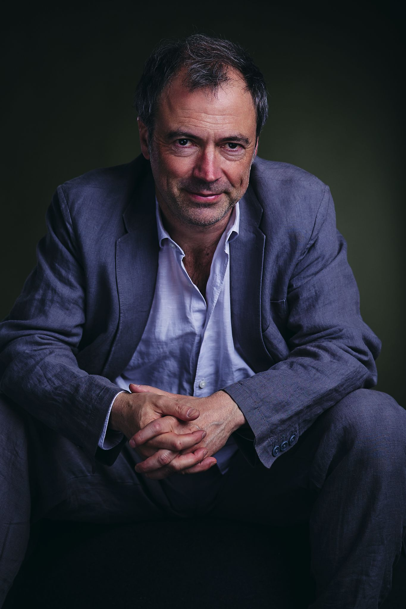
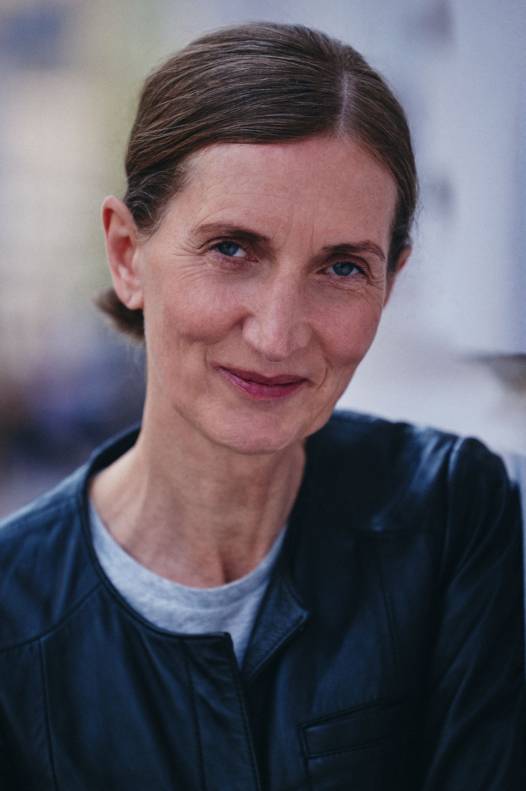
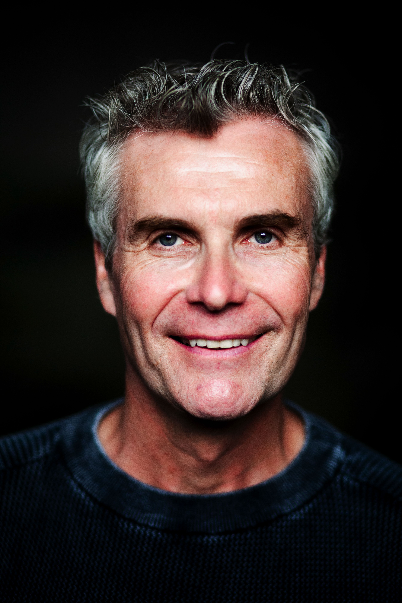
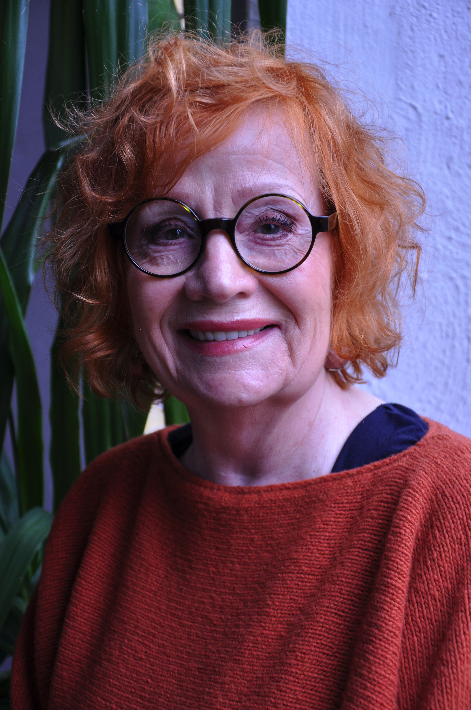

austroPott
Theater im Dortmunder U
TICKETS
austroPott - Theater im Dortmunder U
austroPott wurde 2012 von Richard Saringer, Harald Schwaiger und Michael Kamp ins Leben gerufen.
In Kooperation mit dem Dortmunder U spielen wir dort seitdem in wechselnder Besetzung regelmässig
erfolgreiche Komödien mit Tiefgang und werden von unserem Publikum mit wachsendem Zuspruch angenommen.
Wir freuen uns auf Sie und wünschen Ihnen viel Vergnügen!



